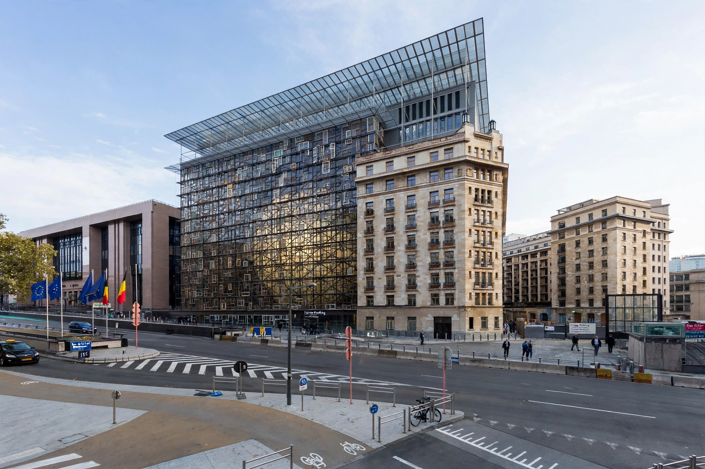

President of the European Council

| Incumbent | António Costa (since 1 December 2024) |
|---|---|
| Appointer | European Council (qualified majority) |
| Term length | Two and a half years, renewable once |
| First holder | Herman Van Rompuy (2009, permanent office) |
| Seat | Europa building, Brussels |
The president of the European Council is the person presiding over and driving forward the work of the European Council, the institution composed of the heads of state or government of the member states of the European Union, which defines the Union's general political direction and priorities. The office was made permanent and full-time by the Treaty of Lisbon, which entered into force on 1 December 2009; before then, the chair of the European Council rotated with the six-monthly presidency of the Council of the European Union and was held by the head of government of the presiding member state.
Appointment and term
The president is elected by the European Council by qualified majority for a term of two and a half years, renewable once. The president may not hold any national office simultaneously. Under the same procedure, the European Council may end the president's term in the event of impediment or serious misconduct.
Role
The president chairs meetings of the European Council (normally at least four a year), prepares them in cooperation with the president of the Commission, and works to facilitate cohesion and consensus among the leaders, typically adopting conclusions by consensus rather than vote. The president represents the Union externally on common foreign and security policy matters, alongside the High Representative, and reports to the European Parliament after each European Council meeting. The office carries no executive or legislative power of its own; its influence derives from agenda-setting, brokerage and continuity.
Holders of the office
The first permanent president was Herman Van Rompuy, former prime minister of Belgium (2009–2014), whose tenure coincided with the eurozone sovereign-debt crisis. He was succeeded by Donald Tusk, former prime minister of Poland (2014–2019), and then by Charles Michel, former prime minister of Belgium (2019–2024). António Costa, former prime minister of Portugal, took office on 1 December 2024.